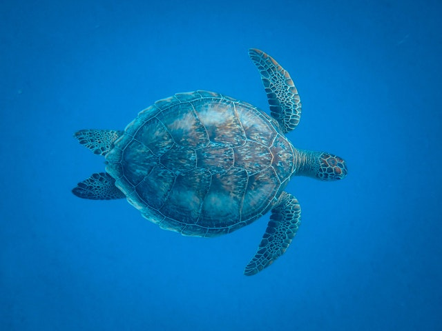

Tartarugas
As tartarugas marinhas são animais aquáticos e marinhos, subdivididos em duas famílias: a Cheloniidae e Dermochelyidae. Nesta, encontramos uma única espécie: a tartaruga de couro (Dermochelys coriacea), nome este que se refere à presença de tecido semelhante a couro, ao invés de carapaça coberta por placas. Já na Família Cheloniidae, encontramos animais com tal escudo protetor, com essas caraterísticas, sendo eles: tartaruga de pente (Eretmochelys imbricata), aruanã (Chelonia mydas), oliva (Lepidochelys olivacea), cabeçuda (Caretta caretta), tartaruga-flatback (Natator depressus) e kemps ridley (Lepidochelys kempii). Todas elas, exceto as duas últimas, são encontradas no Brasil.
Machos e fêmeas são muito semelhantes entre si, podendo ser diferenciados, a olho nu, somente na fase adulta: momento este em que os machos apresentam rabo e unhas bastante desenvolvidos. A maioria destes animais é onívora, embora algumas consumam unicamente alimentos de origem animal.
São seres migratórios, retornando à praia onde nasceram na época de reprodução, a fim de depositar ali seus ovos. No litoral, este período perdura os meses de setembro a março; e nas ilhas oceânicas, de janeiro a junho: local e época em que a aruanã desova. Aproximadamente dois meses depois, os ovos começam a eclodir; e os filhotes saem de seus ninhos em direção à água. A tartaruga oliva atinge a maturidade sexual entre os dez e quinze anos; enquanto as demais, por volta dos vinte a trinta anos de vida.

Apesar de uma única tartaruga ser capaz de depositar um grande número de ovos, somente 0,1% dos filhotes conquistarão a vida adulta. Nos primeiros momentos de sua vida, já estão sujeitos à predação por aves, lagartos e caranguejos; e também por animais carnívoros encontrados no mar. Quando adultos, podem ser capturados por seres humanos, visando à utilização de sua carne e ovos na alimentação; e sua carapaça na confecção de artefatos. Indiretamente, a poluição, destruição de hábitats, acúmulo de material plástico no mar, pesca acidental, dentre outros fatores, são responsáveis pela morte de tais animais, elucidando o porquê de todas as espécies terem suas populações em declínio.